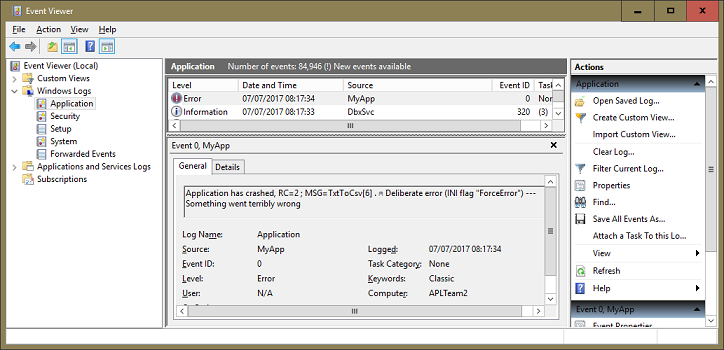
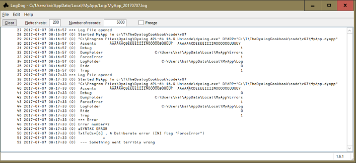

MyApp already anticipates, tests for and reports certain foreseeable problems with the parameters. We’ll now move on, to handle errors more comprehensively.
- Other problems are foreseeable. The file system is a rich source of ephemeral problems and displays. Many of these are caught and handled by the APLTree utilities.
They might make several attempts to read or write a file before giving up and signalling an error. Hooray. We need to handle the events signalled when the utilities give up.
- The MyApp EXE terminates with an all-OK zero exit code even when it has caught and handled an error.
It would be a better Windows citizen if it returned custom exit codes, letting a calling program know how it terminated.
- By definition, unforeseen problems haven’t been foreseen.
But we foresee there will be some! A mere typo in the code could break execution. We need a master trap to catch any events that would break execution, save them for analysis, and report them in an orderly way.
We'll start with the second item from the list above: quitting and passing an exit code.
How do you see the exit code returned to Windows? You can access it in the command shell like this:
Z:\code\v05\MyApp.exe Z:\texts\en
echo Exit Code is %errorlevel%
Exit Code is 0
MyApp.exe Z:\texts\does_not_exist
echo Exit Code is %errorlevel%
Exit Code is 101but only if you ticked the check box Console application in the Export dialog box. We don’t want to do this if we can help it, because we cannot ride into an application with this option active. Therefore we are going to execute our stand-alone EXE from now on with the help of the APLTree class Execute.
Copy Z:\code\v06 to Z:\code\v07.
For the implementation of global error handling we need APLTree's HandleError class. For calling the exported EXE we need the Execute class. Therefore we add both to the DYAPP. Edit Z:\code\v07\MyApp.dyapp:
Target #
Load ..\AplTree\APLTreeUtils
Load ..\AplTree\FilesAndDirs
Load ..\AplTree\HandleError
Load ..\AplTree\Execute
Load ..\AplTree\Logger
Load Constants
Load Utilities
Load MyApp
Run MyApp.SetLXFor foreseen errors we check in the code and quit when something is wrong, and pass an error code to the calling environment.
First we define in #.MyApp a child namespace of exit codes:
:Namespace EXIT
OK←0
INVALID_SOURCE←111
SOURCE_NOT_FOUND←112
UNABLE_TO_READ_SOURCE←113
UNABLE_TO_WRITE_TARGET←114
GetName←{
l←' '~¨⍨↓⎕NL 2
ind←({⍎¨l}l)⍳⍵
ind⊃l,⊂'Unknown error'
}
:EndNamespaceWe define an OK value of zero for completeness; we really are trying to eliminate from our functions numerical constants that the reader has to interpret. In Windows, an exit code of zero is a normal exit.
All the exit codes are defined in this namespace. The function code can refer to them by name, so the meaning is clear. And this is the only definition of the exit-code values.
We can convert the numeric value back to the symbolic name with the function GetName:
EXIT.GetName EXIT.INVALID_SOURCE
INVALID_SOURCEThis is useful when we want to log an error code: the name is telling while the number is meaningless.

We could have defined EXIT in #.Constants, but we reserve that script for Dyalog constants, keeping it as a component that could be used in other Dyalog applications. The exit codes defined in EXIT are specific to MyApp, so are better defined there.
Now the result of TxtToCsv gets passed to Off to be returned to the operating system as an exit code.
∇ StartFromCmdLine;exit;args;rc
⍝ Read command parameters, run the application
args←⌷2 ⎕NQ'.' 'GetCommandLineArgs'
rc←TxtToCsv 2⊃2↑args
Off rc
∇Note that in this particular case we set a local variable rc. Strictly speaking, this is not necessary. We learned from experience not to call several functions on a single line with the left-most being Off. (If you do, you will regret it one day.)
Now we introduce a function Off:
∇ Off exitCode
:If 0<⎕NC'MyLogger'
:If exitCode=EXIT.OK
MyLogger.Log'MyApp is closing down gracefully'
:Else
MyLogger.LogError exitCode('MyApp is unexpectedly shutting down: ',EXIT.GetName exitCode)
:EndIf
:EndIf
:If A.IsDevelopment
→
:Else
⎕OFF exitCode
:EndIf
∇In case you wonder about ⎕OFF: that's actually a niladic function. Being able to provide a ‘right argument’ is therefore a kind of cheating because there can’t be any. This is a special case in the Dyalog parser.
Note that ⎕OFF is actually only executed when the program detects a runtime environment, otherwise it just quits. Although the workspace is much less important in these days of scripts you still don’t want to lose it by accident.
We modify GetFiles so that it checks its arguments and the intermediary results:
leanpub-start-insert
∇ (rc target files)←GetFiles fullfilepath;csv;target;path;stem;isDir
⍝ Checks argument and returns a list of files (or a single file).
fullfilepath~←'"'
files←target←''
:If 0∊⍴fullfilepath
rc←EXIT.INVALID_SOURCE
:Return
:EndIf
csv←'.csv'
:If 0=F.Exists fullfilepath
rc←EXIT.SOURCE_NOT_FOUND
:ElseIf ~isDir←F.IsDir fullfilepath
:AndIf ~F.IsFile fullfilepath
rc←EXIT.INVALID_SOURCE
:Else
:If isDir
target←F.NormalizePath fullfilepath,'\total',csv
files←⊃F.Dir fullfilepath,'/*.txt'
:Else
(path stem)←2↑⎕NPARTS fullfilepath
target←path,stem,csv
files←,⊂fullfilepath
:EndIf
target←(~0∊⍴files)/target
rc←EXIT.OK
:EndIf
∇Note that we have replaced some constants by calls to functions in FilesAndDirs. You might find this easier to read.
In general, we like functions to start at the top and exit at the bottom. Returning from the middle of a function can lead to confusion, and we have acquired a great respect for our capacity to get confused.
However, here we don’t mind exiting the function with :Return on line 5. It’s obvious why that is, and it saves us one level of nesting in the control structures. Also, there is no tidying up at the end of the function that we would miss with :Return.
ProcessFile now traps some errors:
∇ data←(fns ProcessFiles)files;txt;file
Reads all files and executes `fns` on the contents.
data←⍬
:For file :In files
:Trap Config.Trap/FileRelatedErrorCodes
txt←'flat'A.ReadUtf8File file
:Case
MyLogger.LogError'Unable to read source: ',file
Off EXIT.UNABLE_TO_READ_SOURCE
:EndTrap
data,←⊂fns txt
:EndFor
∇In the line with the :Trap we call a niladic function (an exception to our rule!) which returns all error codes that are related to problems with files:
∇ r←FileRelatedErrorCodes
⍝ Returns all the error codes that are related to files and directories.
⍝ Useful to trap all those errors.
r←12 18 20 21 22 23 24 25 26 28 30 31 32 34 35
∇Doesn’t that breach our policy of avoiding unintelligible constants in the code? It does indeed.
Let’s fix this. There is a class EventCodes available on the APLTree that contains symbolic names for all these error numbers. The symbolic names are taken from the help page you get when you press F1 on ⎕TRAP. Add this class to your DYAPP file:
...
Load ..\AplTree\Logger
Load ..\AplTree\EventCodes.dyalog
Load Constants
Load Utilities
Load MyApp
Run #.MyApp.SetLX ⍬The EventCodes class comes with a method GetName that, when fed with an integer, returns the corresponding symbolic name. We can use that to convert return codes to meaningful names:
#.EventCodes.GetName¨ #.MyApp.FileRelatedErrorCodes
HOLD_ERROR FILE_TIE_ERROR FILE_INDEX_ERROR FILE_FULL FILE_NAME_ERROR...We can convert this into something that will be useful when we change the function FileRelatedErrorCodes:
⍪'r,←E.'∘,¨#.EventCodes.GetName¨#.MyApp.FileRelatedErrorCodes
r,←E.HOLD_ERROR
r,←E.FILE_TIE_ERROR
r,←E.FILE_INDEX_ERROR
r,←E.FILE_FULL
...Now we can change FileRelatedErrorCodes by copying what we've just printed to the session into the function:
∇ r←FileRelatedErrorCodes;E
⍝ Returns all the error codes that are related to files and directories.
⍝ Useful to trap all those errors.
r←''
E←##.EventCodes
r,←E.HOLD_ERROR
r,←E.FILE_TIE_ERROR
r,←E.FILE_INDEX_ERROR
r,←E.FILE_FULL
r,←E.FILE_NAME_ERROR
r,←E.FILE_DAMAGED
r,←E.FILE_TIED
r,←E.FILE_TIED_REMOTELY
r,←E.FILE_SYSTEM_ERROR
r,←E.FILE_SYSTEM_NOT_AVAILABLE
r,←E.FILE_SYSTEM_TIES_USED_UP
r,←E.FILE_TIE_QUOTA_USED_UP
r,←E.FILE_NAME_QUOTA_USED_UP
r,←E.FILE_SYSTEM_NO_SPACE
r,←E.FILE_ACCESS_ERROR_CONVERTING_FILE
∇Why don’t we just :Trap all errors?
:Trap 0 would trap all errors - way easier to read and write, so why don’t we do this?
Well, for a very good reason: trapping everything includes such basic things as a VALUE ERROR, most likely introduced by a typo, or removing a function you thought not called anywhere.
We don’t want to trap those errors during development. The sooner they come to light the better. For that reason we restrict the errors to be trapped to whatever might pop up when it comes to dealing with files and directories.
Your shipped system must trap all errors. (See Unforeseen errors below.) When you have to trap all errors, use a global flag which will allow you to switch it off in development. :Trap trapFlag/0: if trapFlag is 1 then the trap is active, otherwise it is not.
Back to ProcessFiles. Note that in this context the :Trap structure has an advantage over ⎕TRAP. When it fires, and control advances to its :Else fork, the trap is immediately cleared.
This neatly avoids the following pitfall: a trap fires and invokes a handling expression. But the handling expression also breaks, re-invoking the trap in what now becomes an open loop.
So with :Trap there is no need to reset the trap to avoid an open loop. But you must still consider what might happen if you call other functions in the :Else fork: if they crash the :Trap would fire again!
The handling of error codes and messages can easily obscure the rest of the logic. Clarity is not always easy to find, but is worth striving for. This is particularly true where there is no convenient test for an error, only a trap for when it is encountered.
Note that here for the first time we take advantage of the [Config]Trap flag defined in the INI file, which translates to Config.Trap at this stage. With this flag we can switch off all ‘local’ error trapping, a measure we sometimes need to take to get to the bottom of a problem.
Finally we need to amend TxtToCsv:
∇ exit←TxtToCsv fullfilepath;∆;isDev;Log;LogError;files;target;success
⍝ Write a sibling CSV of the TXT located at fullfilepath,
⍝ containing a frequency count of the letters in the file text
⍝ Returns one of the values defined in `EXIT`.
(rc target files)←GetFiles fullfilepath
:If rc=EXIT.OK
:If 0∊⍴files
MyLogger.Log'No files found to process'
:Else
tbl←⊃⍪/(CountLetters ProcessFiles)files
lines←{⍺,',',⍕⍵}/{⍵[⍒⍵[;2];]}⊃{⍺(+/⍵)}⌸/↓[1]tbl
:Trap Config.Trap/FileRelatedErrorCodes
A.WriteUtf8File target lines
success←1
:Case
MyLogger.LogError'Writing to <',target,'> failed, rc=',(⍕⎕EN),'; ',⊃⎕DMX
rc←EXIT.UNABLE_TO_WRITE_TARGET
success←0
:EndTrap
:If success
MyLogger.Log(⍕⍴files),' file',((1<⍴files)/'s'),' processed:'
MyLogger.Log' ',↑files
:EndIf
:EndIf
:EndIf
∇Note that the exit code is tested against EXIT.OK. Testing 0=exit would work and read as well, but relies on EXIT.OK being 0. The point of defining the codes in EXIT is to make the functions relate to the exit codes only by their names.
Logging file-related errors
Logging errors related to files in a real-world application requires more attention to detail: ⎕DMX provides more information that can be very useful:
MessageOSErrorsInternalLocation
Our code so far covers the errors we foresee: errors in the parameters, and errors encountered in the file system. There remain the unforeseen errors, chief among them, errors in our own code.
If the code we have so far breaks, the EXE will try to report the problem to the session, find no session, and abort with an exit code of 4 to tell Windows “Sorry, it didn’t work out.”
If the error is replicable, we can easily track it down using the development interpreter.
But the error might not be replicable. It could, for instance, have been produced by ephemeral congestion on a network interfering with file operations. Or the parameters for your app might be so complicated that it is hard to replicate the environment and data with confidence. What you really want for analysing the crash is a crash workspace, a picture of the ship when it went down.
For this we need a high-level – or global – trap to catch any event not trapped by any specific :Trap statements. We want it to save the workspace for analysis. We might also want it to report the incident to the developer – users don’t always do this! For this we’ll use the HandleError class from the APLTree.
Define a new EXIT code constant:
....
OK←0
APPLICATION_CRASHED←104
INVALID_SOURCE←111
...104? Why not 4, the standard Windows code for a crashed application? The distinction is useful. An exit code of 104 will tell us MyApp’s trap caught and reported the crash. An exit code of 4 tells you even the trap failed!
We want to establish general error trapping as soon as possible, but we also need to know where to save crash files etc. That means we start right after having instantiated the INI file, because that’s where we get this kind of information from. For establishing error trapping we need to set ⎕TRAP.
Because we want to ensure any function down the stack can pass a certain error up to the next definition of ⎕TRAP (see the ⎕TRAP help, options C and N) it is vitally important not only to set but also to localise ⎕TRAP in StartFromCmdLine
leanpub-start-insert
∇ {r}←StartFromCmdLine arg;MyLogger;Config;rc;⎕TRAP
⍝ Needs command line parameters, runs the application.
r←⍬
(Config MyLogger)←Initial ⍬
⎕WSID←'MyApp'
⎕TRAP←(Config.Debug=0) SetTrap Config
rc←TxtToCsv arg~''''
Off rc
∇We need to set ⎕WSID because the global trap will attempt to save a workspace in the event of a crash.
We set ⎕TRAP by assigning the result of SetTrap, so we we need to create that function now:
∇ trap←{force}SetTrap Config
⍝ Returns a nested array that can be assigned to `⎕TRAP`.
force←{0<⎕NC ⍵:⍎⍵ ⋄ 0}'force'
#.ErrorParms←##.HandleError.CreateParms
#.ErrorParms.errorFolder←⊃Config.Get'Folders:Errors'
#.ErrorParms.returnCode←EXIT.APPLICATION_CRASHED
#.ErrorParms.logFunction←MyLogger.Log
#.ErrorParms.windowsEventSource←'MyApp'
#.ErrorParms.addToMsg←' --- Something went terribly wrong'
trap←force ##.HandleError.SetTrap '#.ErrorParms'
∇Notes:
- First we generate a parameter space with default values by calling
HandleError.CreateParms. - We then overwrite some of the defaults:
- Where to save crash information
- The return code
- What function to use for logging purposes
- Name of the source to be used when reporting the problem to the Windows Event Log (empty=no reporting at all)
- Additional message to be added to the report send to the Windows Event Log: see the chapter on the Windows Event Log
- We specify
ErrorParmsas a global named namespace for two reasons:- Any function might crash, and we need to ‘see’ the namespace with the parameters needed in case of a crash, so it has to be a global in
#. - The
⎕TRAPstatement allows us to call a function and to pass parameters except references, so it has to be a named namespace.
- Any function might crash, and we need to ‘see’ the namespace with the parameters needed in case of a crash, so it has to be a global in
Let’s investigate how this will work; trace into #.MyApp.StartFromCmdLine ''. When you reach line 4, Config exists, so now you can call MyApp.SetTrap with different left arguments:
SetTrap Config
0 1000 S
0 SetTrap Config
0 1000 S
1 SetTrap Config
0 E #.HandleError.Process '#.ErrorParms'
#.ErrorParms.∆List
addToMsg
checkErrorFolder 1
createHTML 1
customFns
customFnsParent
enforceOff 0
errorFolder C:\Users\kai\AppData\Local\MyApp\Errors
logFunction Log
logFunctionParent [Logger:C:\Users\...\MyApp_20170305.log(¯70419218)]
off 1
returnCode 104
saveCrash 1
saveErrorWS 1
saveVars 1
signal 0
trapInternalErrors 1
trapSaveWSID 1
windowsEventSourceWe can test this by inserting a line with a full stop[1] into, say, CountLettersIn.
But that would be awkward. We don’t really want to change our source code in order to test error trapping. (Many an application crashed in production because a programmer forgot to remove a break point before going live.) So we put another setting in the INI file:
[Config]
Debug = ¯1 ; 0=enfore error trapping; 1=prevent error trapping;
Trap = 1 ; 0 disables any :Trap statements (local traps)
ForceError = 1 ; 1=let TxtToCsv crash (for testing global trap handling)
...That requires two minor changes in CreateConfig:
∇ Config←CreateConfig dummy;myIni;iniFilename
...
Config.ForceError←0
iniFilename←'expand'F.NormalizePath'MyApp.ini'
:If F.Exists iniFilename
myIni←⎕NEW ##.IniFiles(,⊂iniFilename)
Config.ForceError←myIni.Get'Config:ForceError'
We change TxtToCsv so that it crashes in case Config.ForceError equals 1:
∇ rc←TxtToCsv fullfilepath;files;tbl;lines;target
⍝ Write a sibling CSV of the TXT located at fullfilepath,
⍝ containing a frequency count of the letters in the file text.
⍝ Returns one of the values defined in `EXIT`.
MyLogger.Log'Source: ',fullfilepath
(rc target files)←GetFiles fullfilepath
{~⍵:r←⍬ ⋄ 'Deliberate error (INI flag "ForceError"'⎕SIGNAL 11}ForceError
...The dfns {~⍵:r←⍬ ⋄ … uses a guard to signal an error in case ⍵ is true and otherwise does nothing but return a shy result. In order to test error trapping we don’t need even to create and execute a new EXE. Instead we just set ForceError to 1 and then call #.MyApp.StartFromCmdLine from within the WS:
#.MyApp.StartFromCmdLine 'Z:\texts\ulysses.txt'
⍎SYNTAX ERROR
TxtToCsv[6] . ⍝ Deliberate error (INI flag "ForceError")
∧That’s exactly what we want! Error trapping should not interfere when we are developing.
To actually test error trapping we need to set the Debug flag in the INI file to 0. That will tell MyApp we want error trapping active, no matter what environment we are in. Change the INI file accordingly and execute it again.
)reset
#.MyApp.StartFromCmdLine 'Z:\texts\ulysses.txt'
HandleError.Process caught SYNTAX ERRORNote that HandleError has not executed ⎕OFF because we executed this in a development environment.
That’s all we see in the session, but when you check the folder #.ErrorParms.errorFolder you will find that indeed there were three new files created in that folder for this crash.
Note that had you traced through the code there would be just two files: the workspace would be missing.
The reason is: with the Tracer active the current workspace cannot be saved. Generally there are two reasons for no workspace being saved:
- An open edit or trace window
- More than one thread running at the moment of the crash
This is not strictly true. When HandleError detects multiple threads it tries to kill all of them. By definition that won’t work because (a) it cannot kill the main thread (0); and (b) it cannot kill its own thread.
However, if it happens to run in the main thread at that very moment it will get rid of all other running threads and be able to save a crash workspace afterwards as a result.
Because we’ve defined a source for the Windows Event Log, HandleError has reported the error accordingly:

See the discussion of the Windows Event Log in a later chapter.
We also find evidence in the log file that something broke; see LogDog:

This is done for us automatically by the HandleError class because we provided the name of a logging function, and a ref pointing to the instance where that log function lives.
We also have an HTM with a crash report, an eponymous DWS containing the workspace saved at the time it broke, and an eponymous DCF whose single component is a namespace of all the variables visible at the moment of the crash. Some of this has got to help.
Note that the crash file names are simply the WSID and the timestamp prefixed by an underscore:
⍪{⊃,/1↓⎕NPARTS⍵}¨⊃#.FilesAndDirs.Dir #.ErrorParms.errorFolder,'\'
MyApp_20170307111141.dcf
MyApp_20170307111141.dws
MyApp_20170307111141.htmlSave your work and re-export the EXE.
What's in those crash files?
The HTM contains a report of the crash and some key system variables:
MyApp_20170307111141
Version: Windows-64 16.0 W Development
⎕WSID: MyApp
⎕IO: 1
⎕ML: 1
⎕WA: 62722168
⎕TNUMS: 0
Category:
EM: SYNTAX ERROR
HelpURL:
EN: 2
ENX: 0
InternalLocation: parse.c 1739
Message:
OSError: 0 0
Current Dir: ...code\v07
Command line: "...\Dyalog\...\dyalog.exe" DYAPP="...code\v07\MyApp.dyapp"
Stack:
#.HandleError.Process[22]
#.MyApp.TxtToCsv[6]
#.MyApp.StartFromCmdLine[6]
Error Message:
⍎SYNTAX ERROR
TxtToCsv[6] . ⍝ Deliberate error (INI flag "ForceError")
∧More information is saved in a single component – a namespace – on the DCF.
(#.ErrorParms.errorFolder,'/MyApp_20160513112024.dcf') ⎕FTIE 1
⎕FSIZE 1
1 2 7300 1.844674407E19
q←⎕FREAD 1 1
q.⎕NL ⍳10
AN
Category
CurrentDir
DM
EM
EN
ENX
HelpURL
InternalLocation
LC
Message
OSError
TID
TNUMS
Trap
Vars
WA
WSID
XSI q.Vars.⎕NL 2
ACCENTS
args
exit
files
fullfilepath
i
isDev
tbl
tgtThe DWS is the crash workspace. Load it. The Latent Expression has been disabled to ensure MyApp does not attempt to start up again.
⎕LX
⎕TRAP←0 'S' ⍝#.MyApp.StartFromCmdLineThe state indicator shows the workspace captured at the moment the HandleError object saved the workspace. Your real problem – the full stop in MyApp.TxtToCsv – is some levels down in the stack.
)SI
#.HandleError.SaveErrorWorkspace[7]*
#.HandleError.Process[28]
#.MyApp.TxtToCsv[6]*
#.MyApp.StartFromCmdLine[6]You can clear HandleError off the stack with a naked branch arrow; note the * on the first and third line. When you do so, you'll find the original global trap restored. Disable it. Otherwise any error you produce while running code will trigger HandleError again!
→
)SI
#.MyApp.TxtToCsv[6]*
#.MyApp.StartFromCmdLine[6]
⎕TRAP
0 E #.HandleError.Process '#.ErrorParms'
⎕TRAP←0/⎕TRAP
We also want to check whether the correct return code is returned. For that we have to call the EXE, but we don’t do this in a console window for the reasons we discussed earlier. Instead we use the Execute class which provides two main methods:
Processallows us to catch a program’s standard outputApplicationallows us to catch a program’s exit code
⎕←2⊃#.Execute.Application 'Myapp.exe '"Z:\texts\ulysses.txt"'
104In development you’ll discover and fix most errors while working from the APL session. Unforeseen errors encountered by the EXE will be much rarer. Now you’re all set to investigate them!
We’ve established #.ErrorParms as a namespace, and we have explained why: HandleError.Process needs to see ErrorParms, no matter the circumstances, otherwise it cannot work. Since we construct the workspace from scratch when we start developing it cannot do any harm because we quit as soon as the work is done.
Or can it? Let’s check. First, change the INI file so that it reads:
...
Trap = 1 ; 0 disables any :Trap statements (local traps)
ForceError = 0 ; 1=let TxtToCsv crash (for testing global trap handling)
...Now double-click the DYAPP, call #.MyApp.StartFromCmdLine '' and execute:
⎕nnames
C:\Users\kai\AppData\Local\MyApp\Log\MyApp_20170309.logThe log file is still open! Now that’s what we expect to see as long as MyLogger lives, but that is kept local in #.MyApp.StartFromCmdLine, so why is this? The culprit is ErrorParms! In order to allow HandleError to write to our log file we’ve provided not only the name of the log file but also a reference pointing to the instance the log function is living in:
#.ErrorParms.logFunctionParent
[Logger:C:\Users\kai\AppData\Local\MyApp\Log/MyApp_20170309.log(¯76546889)]In short: we have a good reason to get rid of ErrorParms once the program has finished – but how? ⎕SHADOW to the rescue! With ⎕SHADOW we can declare a variable to be local from within a function. Mainly useful for localising names that have been constructed by other expressions, we can use it to make ErrorParms local within StartFromCmdLine. For that we add a single line:
∇ {r}←StartFromCmdLine arg;MyLogger;Config;rc;⎕TRAP
⍝ Needs command line parameters, runs the application.
r←⍬
#.⎕SHADOW'ErrorParms'
⎕WSID←'MyApp'
....Note that we put #. in front of ⎕SHADOW; that is effectlively the same as having a header StartFromCmdLine;#.ErrorParms – but that is syntactically impossible to do. With #.⎕SHADOW it works. When you now try a double-click on the DYAPP and call #.MyApp.StartFromCmdLine you will find that no file is tied any more, and that #.ErrorParms is not hanging around either.
Tthere is a possibility of MyApp crashing without the global trap catching it. This is because we establish the global trap only after instantiating the INI file. Only then do we know where to write the crash files, how to log the error, etc.
But an error might occur before that!
Naturally there is no perfect solution available here but we can at least try to catch such errors.
For this we establish a ⎕TRAP with default settings very early, and we make sure that ⎕WSID is set even earlier, otherwise any attempt to save the crash WS will fail.
∇ {r}←StartFromCmdLine arg;MyLogger;Config;rc;⎕TRAP
⍝ Needs command line parameters, runs the application.
r←⍬
⎕WSID←'MyApp'
⎕SIGNAL 0
⎕TRAP←1 #.HandleError.SetTrap ⍬
.
#.⎕SHADOW'ErrorParms'
....Note that we use the SetTrap function in HandleError. It accepts a parameter space as right argument, but it also accepts an empty vector, when it falls back to the defaults.
Resetting the diagnostic message and the event number
We take the opportunity to initialize both ⎕DM and ⎕EN: with ⎕SIGNAL 0 we ensure
.
.
SYNTAX ERROR
.
∧
⎕DM
SYNTAX ERROR
⎕EN
2
⎕SIGNAL 0
⎕DM
⎕EN
0For testing purposes we have provided a 1 as left argument, which enforces error trapping even in a development environment. In the following line we break the program with a full stop.
When you now call #.MyApp.StartFromCmdLine '' the error is caught. Of course no logging will take place but it will still try to save the crash files. Since no better place is known it will try to create a folder MyApp\Errors in %LOCALAPPDATA%.
You can try this now but make sure that when you are ready you remove the line with the full stop from MyApp.StartFromCmdLine and also remove the 1 provided as left argument to HandleError.SetTrap.
HandleError can be configured in many ways by changing the defaults provided by the CreateParms method. There is a table with documentation available; execute ]ADoc #.HandleError and scroll to CreateParms. Most of the parameters are self-explaining but some need background information.
#.HandleError.CreateParms.∆List
addToMsg
checkErrorFolder 1
createHTML 1
customFns
customFnsParent
enforceOff 0
errorFolder Errors/
logFunction
logFunctionParent
off 1
returnCode 1
saveCrash 1
saveErrorWS 1
saveVars 1
signal 0
trapInternalErrors 1
trapSaveWSID 1
windowsEventSourcesignalBy default,
HandleErrorexecutes⎕OFFin a runtime environment. That’s not always the best way to deal with an error.In a complex application it might be the case that just one command fails, but the rest of the application is doing fine. In that case we would be better off by setting
offto 0 and signalling a numeric code that can be caught by yet another⎕TRAPthat simply allows the user to explore other commands in the application.trapInternalErrors- This flag allows you to switch off any error trapping within
HandleError. This can be useful in case something goes wrong. It can be useful when working on or debuggingHandleErroritself. saveCrash,saveErrorWSandsaveVars- While
saveCrashandsaveVarsare probably always 1, settingsaveErrorWSto 0 is perfectly reasonable if you know any attempt to save the error WS will fail, for example because your application is multi-threaded. (Another good reason to not save a workspace is to keep your code from spying eyes.) customFnsandcustomFnsParent- This allows you to have
HandleErrorcall a function of your choice. For example, you can use this to send an email or a text to a certain address. windowsEventSource- This defaults to an empty vector, meaning that
HandleErrordoes not attempt to write to the Windows Event Log. Writing to the Windows Event Log is discussed in its own chapter.